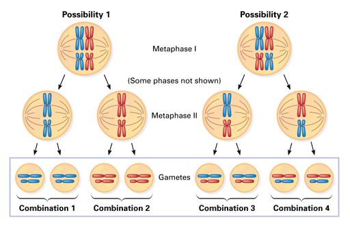
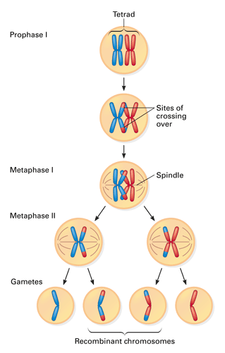
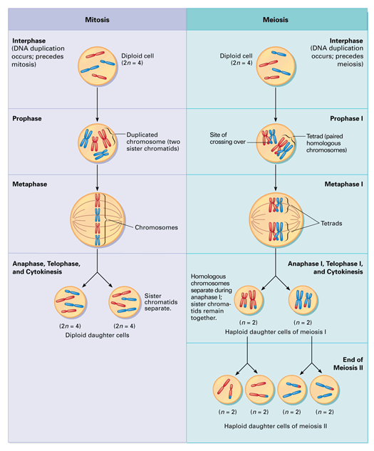

Objectives
- Describe how chromosome assortment during meiosis contributes to genetic variation.
- Explain how crossing over contributes to genetic variation.
- Compare and contrast mitosis and meiosis.
Key Terms
As you have read, offspring that result from sexual reproduction are genetically different from their parents and from one another. This genetic variety in offspring is the raw material for natural selection, which will be discussed in Unit 4. This section explores how genetic variety arises through meiosis and fertilization.
Assortments of Chromosomes
Figure 9-18 illustrates one way in which meiosis contributes to genetic variety. The example is an organism with a diploid chromosome number of four (2n = 4). How the chromosomes in each homologous pair (tetrads) line up and separate at metaphase I is a matter of chance, like the flip of a coin. So, the assortment of chromosomes that end up in the resulting cells occurs randomly. In this example, four combinations are possible.
|  |
Figure 9-18
In a diploid cell with four chromosomes (two homologous pairs), there are two equally possible ways for the chromosomes inherited from the two parents to be arranged during metaphase I. This variation in the orientation of chromosomes leads to gametes with four equally possible combinations of chromosomes. |
If you know the haploid number for an organism, you can calculate the number of possible combinations in the gametes. The possible combinations are equal to 2n, where n is the haploid number. For the organism in Figure 9-18, n = 2, so the number of chromosome combinations is 22, or 4. For a human, n = 23, so there are 223, or about 8 million, possible chromosome combinations!
Crossing Over
The number of different chromosome combinations in gametes is one factor that contributes to genetic variation. A second factor is crossing over—the exchange of genetic material between homologous chromosomes. This exchange occurs during prophase I of meiosis. Figure 9-19 shows the results of crossing over in one tetrad. When crossing over begins, homologous chromosomes are closely paired all along their lengths. There is a precise gene-by-gene alignment between adjacent chromatids of the two chromosomes. Segments of the two chromatids can be exchanged at one or more sites.
|  |
Figure 9-19
This diagram illustrates an example of crossing over in one pair of homologous chromosomes, shown here side-by-side for ease of viewing. (The process can occur in all pairs.) Early in prophase I, a chromatid from one chromosome exchanges a segment with the corresponding segment from the other chromosome. These altered chromosomes give rise to what are known as "recombinant chromosomes" in the gametes. |
So, on top of all the possible chromosome combinations, crossing over adds another source of variation. Crossing over can produce a single chromosome that contains a new combination of genetic information from different parents, a result called genetic recombination.
Because chromosomes may contain hundreds of genes, a single crossover event can affect many genes. Since more than one crossover can occur in each tetrad, it is no wonder that gametes and the offspring that result from them can be so varied.
Review: Comparison of Mitosis and Meiosis
You have now learned about two versions of cell reproduction in eukaryotic organisms. Figure 9-20 compares these processes. Mitosis, which provides for growth, repair, and asexual reproduction, produces daughter cells that are genetically identical to the parent cell. Meiosis, which takes place in a subset of specialized cells in sexually reproducing organisms, yields haploid daughter cells with only one set of homologous chromosomes. This set consists of one member of each homologous pair.
In both mitosis and meiosis, the chromosomes duplicate only once, in the preceding interphase. Mitosis involves one division of the genetic material in the nucleus, and it is usually accompanied by cytokinesis, producing two diploid cells. Meiosis involves two nuclear divisions, yielding four haploid cells.
The key events that distinguish meiosis from mitosis occur during the stages of meiosis I. In prophase I, the duplicated homologous chromosomes form tetrads, and crossing over occurs. Then, during metaphase I, the tetrads (rather than individual doubled chromosomes) are aligned at the center of the cell. In anaphase I, sister chromatids stay together and go to the same pole when the homologous chromosomes separate. At the end of meiosis I, the chromosome number in each of the two daughter cells is haploid, but each chromosome still consists of two sister chromatids. Meiosis II is basically identical to mitosis. The sister chromatids separate, and each cell divides in two. Because these cells are already haploid, the cells they produce are haploid, too.
Mitosis and meiosis both make it possible for cells to inherit genetic information in the form of chromosome copies. In the next chapter, you will have the opportunity to connect this property of chromosomes to the inheritance of genes for specific traits, such as your blood type. Keep in mind the process of meiosis and the production of gametes as you study the patterns of inheritance. You'll find that an understanding of how meiosis distributes chromosomes will make it easier for you to follow how specific traits are inherited.
|  |
Figure 9-20
Both mitosis and meiosis begin after the chromosomes have been duplicated during interphase. Though similar, the results of the two processes differ in the number of cells produced and in the number of chromosomes the cells contain. |
Concept Check 9.6
1. Draw a diagram that shows the chromosome combinations that are possible in the haploid gametes of an organism with a diploid number of 6.
2. Describe how crossing over during meiosis in an individual organism recombines the genetic material of the organism's two parents.
3. Describe two differences between meiosis and mitosis.